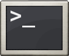

Shell脚本：Linux Shell脚本学习指南（超详细）
你好，欢迎来到「Linux Shell脚本」学习专题，你将享受到免费的 Shell 编程资料，以及很棒的浏览体验。
这套 Shell 脚本学习指南针对初学者编写，它通俗易懂，深入浅出，不仅讲解了基本知识，还深入底层原理，能让你在 1 天时间内快速了解 Shell（当然，要想深入学习还得假以时日）。
Shell 既是一个连接用户和 Linux 内核的程序，又是一门管理 Linux 系统的脚本语言。Shell 脚本虽然没有 C++、Python、Java、C# 等编程语言强大，但也支持了基本的编程元素，这是本教程要重点讲解的。
带有 $ 符号的为高级教程，能够让大家认识到 Shell 的本质，并掌握一些“黑科技”。
- 第1章 Shell基础（开胃菜）
- 1. Shell是什么？1分钟理解Shell的概念！
- 2. Shell是运维人员必须掌握的技能
- 3. 常用的Shell有哪些？
- 4. 进入Shell的两种方式
- 5. Linux Shell命令的基本格式
- 6. Shell命令的本质到底是什么？如何自己实现一个命令？
- 7. Shell命令的选项和参数在本质上到底是什么？
- 8. Linux Shell命令提示符
- 9. Shell修改命令提示符
- 10. 第一个Shell脚本
- 11. 执行Shell脚本（多种方法）
- 12. Shell四种运行方式（启动方式）精讲
- 13. Shell配置文件（配置脚本）的加载
- 14. 如何编写自己的Shell配置文件（配置脚本）？
- 第2章 Shell编程
- 1. Shell变量：Shell变量的定义、赋值和删除
- 2. Shell变量的作用域：全局变量、环境变量和局部变量
- 3. Shell命令替换：将命令的输出结果赋值给变量
- 4. Shell位置参数（命令行参数）
- 5. Shell特殊变量：Shell $#、$*、$@、$?、$$
- 6. Shell $*和$@之间的区别
- 7. Shell $?：获取函数返回值或者上一个命令的退出状态
- 8. Shell字符串详解
- 9. Shell字符串拼接（连接、合并）
- 10. Shell字符串截取（非常详细）
- 11. Shell数组：Shell数组定义以及获取数组元素
- 12. Shell获取数组长度
- 13. Shell数组拼接，Shell数组合并
- 14. Shell删除数组元素（也可以删除整个数组）
- 15. Shell关联数组（下标是字符串的数组）
- 16. Shell内建命令（内置命令）
- 17. Shell alias：给命令创建别名
- 18. Shell echo命令：输出字符串
- 19. Shell read命令：读取从键盘输入的数据
- 20. Shell exit命令：退出当前进程
- 21. Shell declare和typeset命令：设置变量属性
- 22. Shell数学计算（算术运算，加减乘除运算）
- 23. Shell (())：对整数进行数学运算
- 24. Shell let命令：对整数进行数学运算
- 25. Shell $[]：对整数进行数学运算
- 26. Shell expr命令：对整数进行运算
- 27. Linux bc命令：一款数学计算器
- 28. Shell declare -i：将变量声明为整数类型
- 29. Shell if else语句（详解版）
- 30. Shell退出状态
- 31. Shell test命令（Shell []）详解，附带所有选项及说明
- 32. Shell [[]]详解：检测某个条件是否成立
- 33. Shell case in语句详解
- 34. Shell while循环详解
- 35. Shell until循环用法详解
- 36. Shell for循环和for int循环详解
- 37. Shell select in循环详解
- 38. Shell break和continue跳出循环详解
- 39. Shell函数详解（函数定义、函数调用）
- 40. Shell函数参数
- 41. Shell函数返回值精讲
- 第3章 Shell高级
- 1. Linux Shell重定向（输入输出重定向）精讲
- 2. Linux中的文件描述符到底是什么？
- 3. 结合文件描述符谈重定向，彻底理解重定向的本质！
- 4. 使用exec命令操作文件描述符
- 5. Shell代码块重定向（对一组命令进行重定向）
- 6. Shell Here Document（内嵌文档/立即文档）
- 7. Shell Here String（内嵌字符串，嵌入式字符串）
- 8. Shell组命令（把多条命令看做一个整体）
- 9. Shell进程替换（把一个命令的输出传递给另一个命令）
- 10. Linux Shell管道详解
- 11. Shell过滤器
- 12. 子Shell和子进程到底有什么区别？
- 13. 如何检测子Shell和子进程？
- 14. Linux中的信号是什么？
- 15. Bash Shell中的信号简述
- 16. Linux进程简明教程
- 17. Linux使用什么命令查看进程
- 18. Shell向进程发送信号（kill、pkill和killall命令）
- 19. Linux Shell trap命令：捕获信号
- 20. Linux Shell trap命令捕获信号实例演示
- 21. Linux Shell移除（重置）信号捕获
- 22. 关于Linux Shell中进程、信号和捕获的总结
- 23. Shell模块化（把代码分散到多个脚本文件中）
- 第4章 Bash Shell快捷键
- 1. Bash Shell快捷键大全
- 2. Bash Shell命令自动补全功能
- 3. Shell history：历史命令
关注公众号「站长严长生」，在手机上阅读所有教程，随时随地都能学习。
不定期发布学习路线+书籍文档+优质视频，为初学者指点迷津。
绑定网站登录功能，再也不用担心密码丢失。
编程11年，建站10年，创业7年，写作6年，既有硬知识，也有软技能。
长期更新，坚持原创，敢说真话，凡事有态度。

微信扫码即可关注